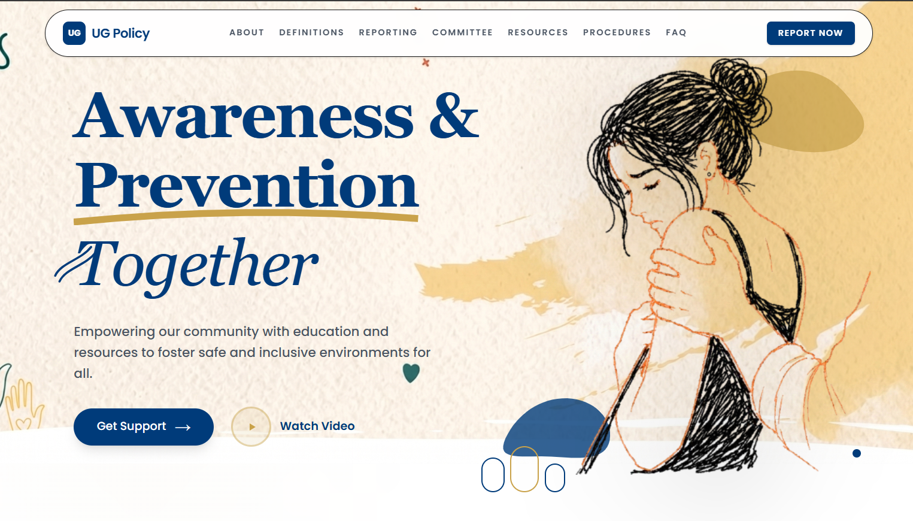
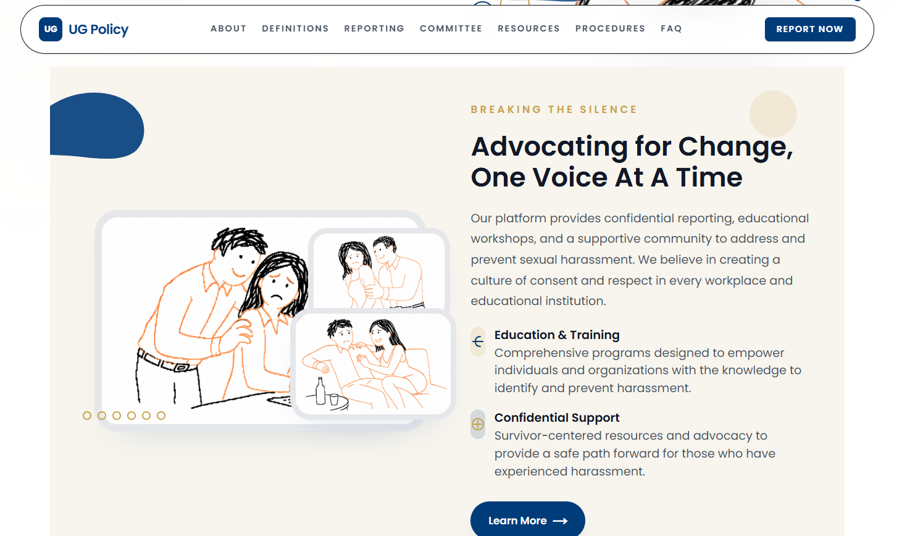
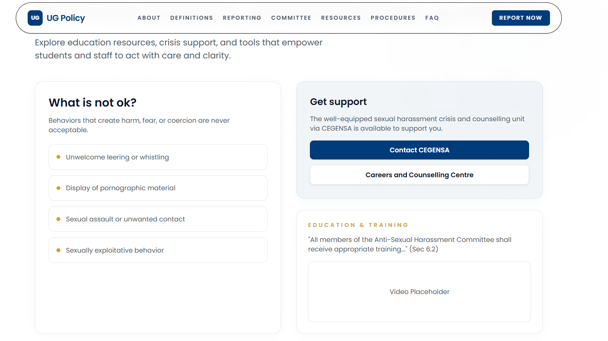
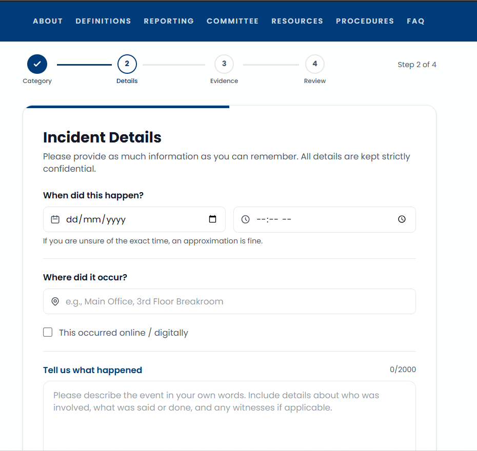

Draka-WW (UG Policy)
Version 1.0 · Comprehensive System Reference · Next.js 16.2.6 · PostgreSQL / Neon
1. Executive Overview & Vision
Project Draka-WW (publicly branded as UG Policy) is an enterprise-grade, full-stack web application developed to modernize sexual harassment awareness, prevention, and reporting. The platform serves two primary cohorts:
- The Public (Students, Faculty, Staff): An accessible, trauma-informed digital space with educational resources, institutional policies, procedural guidelines, and support information.
- Administrators (ASHC Officers, HR, Committees): A secure dashboard to triage, track, and manage submitted incidents with efficiency and absolute confidentiality.
The core objective is to reduce friction in reporting sensitive incidents through an intuitive, anonymous, and secure digital portal while empowering administration with actionable tools to handle cases systematically.


2. System Architecture & High-Level Design
The application uses a modern serverless architecture, minimizing operational overhead while maximizing scalability and performance.
Technology Stack
| Layer | Technology |
|---|---|
| Core Framework | Next.js 16.2.6 (App Router) |
| UI Library | React 19 |
| Styling | Tailwind CSS v4 + CSS custom properties |
| Icons / Animation | Lucide-React, Framer Motion |
| Database | PostgreSQL hosted on Neon, @neondatabase/serverless |
| Type Safety | TypeScript v5.x (frontend + backend) |
Architectural Flow
/dashboard)
require a valid admin-session cookie./api/*).3. Frontend Architecture
Component Hierarchy
- Layouts (
app/layout.tsx): Wraps the app in a shared HTML structure, injects global CSS, and provides shared context providers. - Navigation (
components/Navigation.tsx): Responsive client-side header with scroll-aware transparency and mobile off-canvas menus. Hidden on auth/admin routes. - Pages (
app/page.tsx, etc.): Modular functional components using SVG shapes and Tailwind responsive grids.
Rendering Strategy
'use client' to hydrate in the browser.
4. Application Routing & Navigation
Public Zone
| Route | Description |
|---|---|
| / | Landing page — hero, statistics, call-to-actions. |
| /about-policy | Detailed breakdown of institutional stance. |
| /definitions | Term clarifications (e.g., Sexual Harassment vs. Bullying). |
| /procedures | Step-by-step guide on post-report processes. |
| /resources | External links, hotlines, and counseling services. |
| /faq | Frequently asked questions. |
| /reporting | Primary public interface for submitting incident reports. |

Authentication Zone
| Route | Description |
|---|---|
| /login | Administrator gateway (within (auth) route group). Verifies credentials
and sets HTTP-only session cookie. |
Administrative Zone (Protected)
| Route | Description |
|---|---|
| /dashboard | Central hub with analytical overviews of incident trends. |
| /reports | Tabular interface for filtering, searching, and viewing case files. |
| /chat | Integrated AI or peer-support chat for real-time triage and policy consultation. |
| /settings | Application configuration and admin profile management. |
5. Backend Architecture & API Ecosystem
All backend logic lives in app/api/, compiled into serverless functions on deployment —
no separate Node.js/Express server required.
Database Connection Management
lib/db.ts is a singleton module managing the PostgreSQL connection pool. In development
it attaches the pool to the global scope to prevent hot-reload connection exhaustion.
import { Pool } from '@neondatabase/serverless';
declare global { var _pool: Pool | undefined; }
export function getDb(): Pool {
if (process.env.NODE_ENV === 'development') {
if (!global._pool)
global._pool = new Pool({ connectionString: process.env.DATABASE_URL });
return global._pool;
}
return new Pool({ connectionString: process.env.DATABASE_URL });
}
Route Handler Conventions
- Stateless: Every API call validates auth status and input parameters independently.
- Error handling: A
try/catchwrapper logs errors server-side and returns sanitized JSON to the client. - SQL injection prevention: All queries use parameterized inputs
(
$1, $2) — no string concatenation.
6. Database Schema Deep Dive
Table: Admin
| Column | Type | Constraints | Notes |
|---|---|---|---|
| id | UUID / Serial | Primary Key | |
| VARCHAR | UNIQUE, NOT NULL | Login identifier. | |
| password | VARCHAR | NOT NULL | Must be bcrypt-hashed in production. |
| name | VARCHAR | NOT NULL | Display name in dashboard. |
| created_at | TIMESTAMP | DEFAULT CURRENT_TIMESTAMP |
admin123 for development. Production deployments must
enforce bcrypt hashing. Never deploy with plaintext credentials.
Table: Report
| Column | Type | Default | Notes |
|---|---|---|---|
| id | VARCHAR | — | Custom-formatted PK, e.g. RPT-8422. |
| title | VARCHAR | — | Brief incident summary. |
| description | TEXT | — | Full narrative. |
| category | VARCHAR | — | Sexual Harassment, Safety Concern,
Policy Violation.
|
| status | VARCHAR | New | New → In Progress → Escalated → Resolved. |
| priority | VARCHAR | — | Critical, High, Medium, Low. |
| location | VARCHAR | NULL | Optional physical location. |
| incident_date | DATE | NULL | Optional. |
| incident_time | TIME | NULL | Optional. |
| is_online | BOOLEAN | — | Flag for digital incidents. |
| evidence_notes | TEXT | NULL | Additional context or evidence links. |
| anonymous | BOOLEAN | true | When true, no PII is stored with the report. |
| created_at | TIMESTAMP | CURRENT_TIMESTAMP | Submission timestamp. |
7. Security Model & Authentication
Authentication & Authorization
Upon successful login, the server issues an HTTP-only, secure cookie named
admin-session, preventing XSS attacks from stealing the token via
document.cookie.
Next.js Middleware checks every request to /dashboard, /reports, and
protected API routes. If the cookie is missing or invalid, the request redirects to
/login or returns 401 Unauthorized.
Data Protection
- SQL Injection: All queries use parameterized inputs (
$1, $2) — raw string concatenation is prohibited. - Anonymity by Design: The
Reportschema omits mandatory reporter identification. Whenanonymous: true, the frontend strips identifying metadata before transmission.
8. Core Workflows
8.1 — Reporting Flow (Public)
/reportingThe UI presents
a supportive, non-intimidating multi-step form.POST /api/reportsClient
sends JSON payload. If anonymous, identifying metadata is stripped before
transmission.RPT-XXXX ID is assigned. Priority auto-calculated by category (e.g. Sexual
Harassment → High). Record inserted.
8.2 — Triage Flow (Admin)
/reportsSession
validated by middleware via admin-session cookie.GET /api/reportsReturns all report records.PATCH /api/reportsAdmin changes status via dropdown. Client
sends {"id":"RPT-1234","status":"In Progress"}.9. Styling & UI Design System
Color Palette
Defined in app/globals.css via CSS variables. Update once to retheme the entire
application:
:root {
--color-primary: #0a2540;
--color-accent: #3b82f6;
--color-bg-surface: #f8fafc;
}
Responsive Strategy
Tailwind's mobile-first breakpoints (sm:, md:, lg:) are used
throughout. The hero transitions from single-column on mobile to
md:grid-cols-[1.1fr_0.9fr] on desktop.
10. Deployment & DevOps Strategy
Vercel Integration
- Edge Network: Static assets and pre-rendered pages served globally via Vercel's CDN.
- Serverless Functions: API routes bundled as AWS Lambda-backed functions with automatic scaling.
Environment Variables
| Variable | Description | Required |
|---|---|---|
| DATABASE_URL | Neon PostgreSQL connection string. Include ?sslmode=require and pooling
parameters. |
Required |
| NODE_ENV | development or production. Controls connection pooling
strategy. |
Recommended |
# Initialize schema and seed data npm run test:api # Or via the setup endpoint curl -X POST http://localhost:3000/api/setup
/api/setup endpoint is for development only. In production, adopt Prisma Migrations
or Drizzle for schema version control and safe rollbacks.
11. Maintenance & Extensibility Guide
Adding a New API Route
app/api/ —
e.g., app/api/analytics/.route.tsExport an async
function matching the HTTP verb:
export async function GET(request: Request) {}.import { getDb } from '@/lib/db';admin-session cookie before executing any query.Modifying the Design System
All core colors are in app/globals.css. To change the primary color:
:root {
--color-primary: #0a2540; /* Update this hex */
}
Tailwind automatically reflects the change across all bg-primary,
text-primary, and border-primary utility classes.
12. API Specifications
Submit a new incident report. The backend auto-assigns a RPT-XXXX ID and
calculates priority based on category.
{
"title": "Incident Summary",
"description": "Full details...",
"category": "Safety Concern",
"anonymous": true,
"location": "Library", // optional
"incident_date": "2026-05-13", // optional
"incident_time": "14:30:00", // optional
"is_online": false,
"evidence_notes": "None" // optional
}
| Status | Body |
|---|---|
| 201 Created | {"success":true,"reportId":"RPT-XXXX"} |
| 400 Bad Request | {"error":"Missing required fields"} |
Retrieve all incident reports. Requires a valid admin-session cookie.
[
{
"id": "RPT-8422",
"title": "Safety Concern in Lab 4",
"status": "New",
"priority": "High",
"created_at": "2026-05-13T12:00:00.000Z"
}
]
Partially update a report. Only provided fields are modified. Returns the fully updated report object.
{
"id": "RPT-8422",
"status": "Resolved"
}
| Status | Body |
|---|---|
| 200 OK | Full updated report object. |
| 404 Not Found | {"error":"Not found"} |